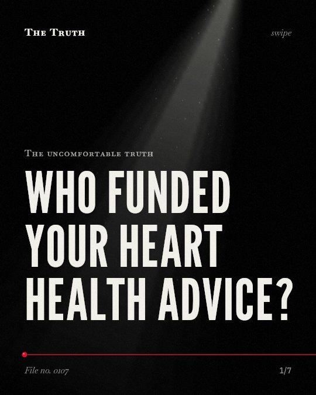

The uncomfortable truth
Who funded your heart health advice?

The sugar industry funded research to cast doubt on sucrose hazards.
During the 1960s and 1970s, industry-sponsored programs successfully promoted fat as the primary cause of coronary heart disease while downplaying the risks of sugar.
Established. Several studies combined, or official data. The evidence backs this.
What the research found
The Sugar Research Foundation (SRF) funded a review in the New England Journal of Medicine in 1965 that discounted evidence linking sucrose consumption to blood lipid levels and coronary heart disease.
“In 1965, the Sugar Research Foundation (SRF) secretly funded a review in the New England Journal of Medicine that discounted evidence linking sucrose consumption to blood lipid levels and hence coronary heart disease (CHD).”
Study, 2017. Kearns et al., PLoS Biology.
The sugar industry sponsored a research program in the 1960s and 1970s that successfully cast doubt about the hazards of sucrose while promoting fat as the dietary culprit in CHD.
“our findings suggest the industry sponsored a research program in the 1960s and 1970s that successfully cast doubt about the hazards of sucrose while promoting fat as the dietary culprit in CHD.”
Study, 2016. Kearns et al., JAMA Internal Medicine.
Industry-related studies were overwhelmingly more likely to reach 'weak/null' conclusions compared with independent studies regarding the adverse effects of SSB consumption on health (OR=57·30, 95 % CI 7·12, 461·56).
“Industry-related studies were overwhelmingly more likely to reach 'weak/null' conclusions compared with independent studies regarding the adverse effects of SSB consumption on health (OR=57·30, 95 % CI 7·12, 461·56).”
Systematic review, 2018. Litman et al., Public Health Nutrition.
The sugar industry did not disclose evidence of harm from animal studies that would have strengthened the case that the CHD risk of sucrose is greater than starch.
“The sugar industry did not disclose evidence of harm from animal studies that would have (1) strengthened the case that the CHD risk of sucrose is greater than starch”
Study, 2017. Kearns et al., PLoS Biology.
A study comparing conventional rats fed a high-sugar diet to those fed a high-starch diet suggested that sucrose consumption might be associated with elevated levels of beta-glucuronidase.
“A study comparing conventional rats fed a high-sugar diet to those fed a high-starch diet suggested that sucrose consumption might be associated with elevated levels of beta-glucuronidase”
Study, 2017. Kearns et al., PLoS Biology.
The proportion of industry-related scientific studies decreased significantly with time, from approximately 30 % at the beginning of the study period to <5 % towards the end (P=0·003).
“The proportion of industry-related scientific studies decreased significantly with time, from approximately 30 % at the beginning of the study period to <5 % towards the end (P=0·003).”
Systematic review, 2018. Litman et al., Public Health Nutrition.
Industry-related studies were more likely to find no harm.
Studies linked to the industry were overwhelmingly more likely to reach weak or null conclusions regarding the effects of sugar-sweetened beverages compared to independent research.
The narrative on heart health was shaped by funding.
That may be why the focus on fat became the standard dietary advice while the risks of sucrose remained less explored by the public.
This part is our reading of the evidence, not a finding.
A soda on a kitchen table.
You reach for a sugar-sweetened beverage in the afternoon. You assume the fat content is the main concern for your heart health.
The honest summary
The evidence shows that the sugar industry actively funded and influenced research to downplay the risks of sucrose and shift the blame for heart disease toward fat.
The research on the health effects of sugar-sweetened beverages shows a significant decrease in industry-related studies over time.
Who funded the advice you follow?
Sources
- Cristin E. Kearns, Laura Anne Schmidt, Stanton A. Glantz (2016). Sugar Industry and Coronary Heart Disease Research. JAMA Internal Medicine. Study, cited 311 times.
- Ethan A. Litman, Steven L. Gortmaker, Cara B. Ebbeling et al. (2018). Source of bias in sugar-sweetened beverage research: a systematic review. Public Health Nutrition. Systematic review, cited 45 times.
- Cristin E. Kearns, Dorie E. Apollonio, Stanton A. Glantz (2017). Sugar industry sponsorship of germ-free rodent studies linking sucrose to hyperlipidemia and cancer: An historical analysis of internal documents. PLoS Biology. Study, cited 32 times.
Also read for this file, not quoted
- Ebert & Orellana (2025). Nucleotide Sugar Transporters: Orchestrating Luminal Glycosylation in Plants.
- Wilén & Gunnarsson (2023). Who knows? On the epistemic status of experience in sugar-dating research.
- Damle (2017). Smart sugar? The sugar conspiracy.
This file was researched and drafted by software, then checked by rules a model cannot talk its way around: each quote above was matched word for word against the paper, and every number had to appear in it. How files are made.